Network Design Operations > Routing Automatically
Routing Automatically
The examples in this section show routing actions at the OCH and DCL layer. The aim of routing is to establish as much traffic as possible within the given capacity of a network layer. These examples describe the impact of the main routing options. For more information on routing options, see the SP Guru Transport Planner User Guide.
Procedure 3-2 Routing Traffic in the Optical Layer (OCH Layer)
- Open the WDMGuru_Examples project.
- Select File > Open....
- Select the WDMGuru_Examples project, then press Open.
The example project, which contains multiple scenarios, is loaded. The Australia scenario appears in the workspace.
- Switch to the USA scenario.
- Select Scenarios > Switch To Scenario > USA.
The USA scenario appears in the workspace.
- Use the OMS button on the toolbar to inspect the OMS layer. Note that initially one fiber pair is lit on each link.
- Use the OCH button on the toolbar to inspect the OCH layer. Note that no wavelengths are in use on the links.
- Route an OCH traffic matrix (with node limitations).
- Click the 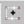 button on the toolbar or select the Design > Route DCL/OCH Traffic dialog box.
- Select OCH Layer as the Layer and OC-48 as the Traffic Matrix.
- Choose the following options:
- Uncheck Allow Equipping Dark Bands in the Link Model Options panel. For more information on these options, see the SP Guru Transport Planner User Guide.
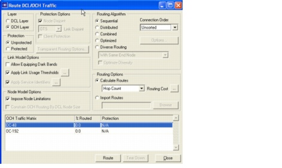
- Press Route.
The Routing Results dialog box appears.
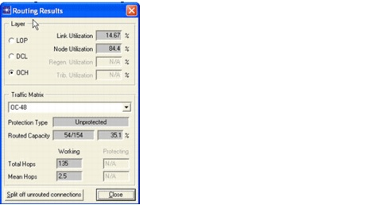
Only 35 percent of the traffic could be accommodated in the network. Fourteen percent of the link capacity in the OCH layer is in use and 84 percent of the OXC capacity. Notice that the node utilization is much higher than the link utilization, and therefore the capacity shortage must be in the nodes. Also, some other statistics are reported, such as the average hop length of the connections. Access the Routing Results dialog box at any time using Design > Routing Results.
- Close the Routing Results and the Route DCL/OCH Traffic dialog boxes.
- Inspect the routes of the connections.
- Select Network > Connection Browser.
- Select OCH for Traffic, All for Layout, and Traffic Matrix for Order.
- Click on the + icon (next to OC-48) to inspect the connection details of traffic matrix OC-48.
For each connection, the following information is shown:
- its capacity (Capacity)
- whether it is routed (Routed)
- whether it is carried on mesh or on rings (Carrier)
- its protection type (Protection)
- its number of hops (Hops), length (Length), delay (Delay), etc.
When you select a connection in the browser, its route is visualized in the workspace. Click on the + icon (next to a connection), to see the route of the connection in the connection browser. To inspect the wavelengths used on the links by the selected connection, mark Show Wavelength Configurations in the lower-left corner of the connection browser.
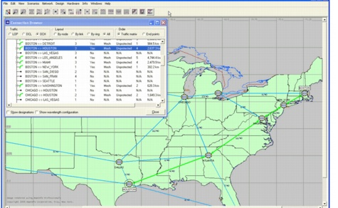
- Close the connection browser.
- Select Info > Topology > OCH Layer. This dialog box provides additional network-wide statistics for the OCH layer, such as the node degree and the node and link utilization. Similar reports can be generated for each of the other layers.
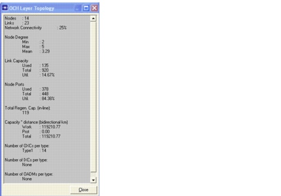
- Close the OCH Layer Topology dialog box.
- Tear down the OCH traffic matrix.
- Select Design > Tear Down Traffic....
- Select the OCH Layer and the (partly accommodated) traffic matrix OC-48, then press Tear Down.
The OC-48 traffic matrix is released from the network and all capacity in the OCH layer becomes available again.
- Close the Tear Down Traffic dialog box.
- Route an OCH traffic matrix (without node limitations).
- Select the Design > Route DCL/OCH Traffic... dialog box, choose OCH Layer as the Layer, and OC-48 as the Traffic Matrix.
- Choose the following options:
- Press Route.
The Routing Results dialog box appears.
Observe that 100 percent of the traffic is routed. Because the node limitations were not imposed, the discrete nodes have been upgraded to the correct size to allow them to route the entire traffic matrix.
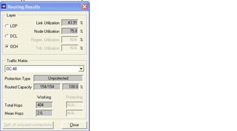
- Close the Routing Results and the Route DCL/OCH Traffic dialog boxes.
- To inspect the nodes in the OCH layer more in depth, open the Network > Node Browser, and then select Ports as the View and OCH as the Layer.
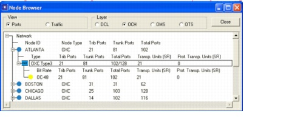
- Close the node browser.
- Tear down the OCH traffic matrix.
- Select Design > Tear Down Traffic....
- Select the OCH Layer and the (entirely accommodated) traffic matrix OC-48, then press Tear Down.
- Close the dialog box.
- Route an OCH traffic matrix (with protection).
- Select Design > Route DCL/OCH Traffic.... In the dialog box, select OCH Layer and the traffic matrix OC-48.
- Choose the following options:
- Press Route.
The Routing Results dialog box indicates that the traffic matrix OC-48 could not be entirely accommodated in the network. Therefore, there must be a capacity shortage on the links (as indicated by the high link utilization), because not all traffic can be assigned a working path and a diverse protection path.
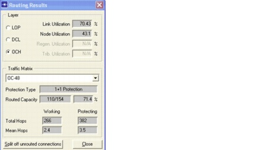
- Close the Routing Results dialog box.
Note that the traffic matrix OC-48 remains part of the list of traffic matrices in the Routing dialog box, because it is not entirely routed. This gives the opportunity to try to route the unrouted part of the traffic matrix, for example, after adding link or node capacity.
- Close the Route DCL/OCH Traffic dialog box.
- Inspect the routes of the connections.
- Select Network > Connection Browser.
- Select OCH for the Traffic, All for the Layout, and Traffic Matrix for the Order.
- Click on the + icon (next to OC-48) to inspect the connection details of traffic matrix OC-48. Select a connection: the working path (in green) and back-up path (in red) are shown on the workspace.
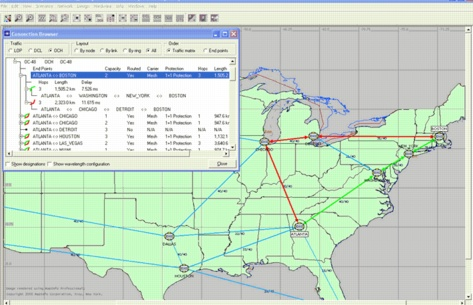
- Close the connection browser.
- Close the project
End of Procedure 3-2
Procedure 3-3 Routing Traffic in the SONET/ SDH Layer (DCL Layer)
- Open the WDMGuru_Examples project.
- Select File > Open....
- Select the WDMGuru_Examples project an press Open.
The example project, which contains multiple scenarios, is loaded. The Australia scenario appears in the workspace.
- Select Scenarios > Switch To Scenario > USA to view the USA scenario in the workspace.
- Route an OCH traffic matrix (without node limitations).
- Select Design > Route DCL/OCH Traffic... dialog box.
- Select OCH Layer, and the traffic matrix OC-48.
- Choose the following options:
- Press Route.
The Routing Results dialog box appears.
The traffic matrix OC-48 is entirely accommodated in the network.
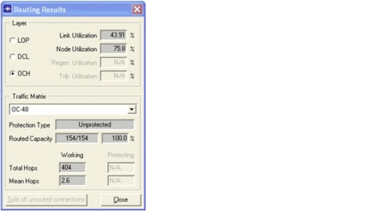
- Close the Routing Results and Route DCL/OCH Traffic dialog boxes.
- Switch to the DCL layer view using the DCL button in the toolbar.
Note that the traffic routed in the OCH layer results in a logical (or virtual) topology in the DCL layer. This is because each non-native connection that is routed in the OCH layer results in a logical DCL link with capacity corresponding to the bit rate of the OCH connection. DCL traffic can be routed on these logical DCL links (see the next step).
- Route a SONET/SDH traffic matrix.
- Select the Design > Route DCL/OCH Traffic... dialog box.
- Select DCL Layer, and the traffic matrix STS-1.
- Choose the following options:
- Unprotected (Protection)
- Sequential (Routing Algorithm)
- Longest First (Connection Order)
- Hop Count (Routing Cost)
Note that the option Impose Node Limitations is always checked and cannot be unchecked for DCL traffic, because continuous node models are being used in the DCL layer (this can be verified in the Network > Network Properties dialog box).
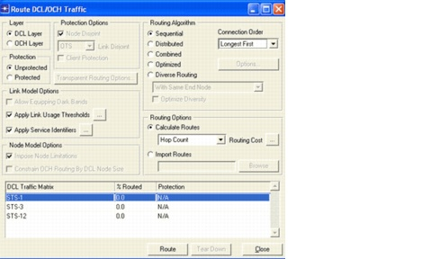
- Press Route.
The Routing Results dialog box appears.
The traffic matrix STS-1 is entirely accommodated in the network.
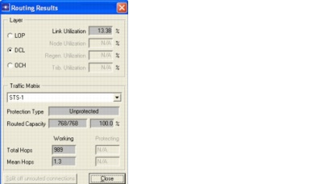
- Close the Routing Results and Route DCL/OCH Traffic... dialog boxes.
- Switch to the DCL layer using the DCL button in the toolbar. Note that some link capacity at the DCL layer is in use now.
- Inspect the routes of the SONET/SDH connections.
- Select Network > Connection Browser.
- Select DCL for the Traffic, All for the Layout, and Traffic Matrix for the Order.
- Click on the + icon (next to STS-1) to inspect the connection details of traffic matrix STS-1.
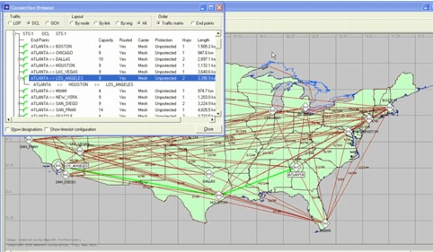
- Close the connection browser.
- Tear down the traffic matrices.
- Select Design > Tear Down Traffic....
- Select the DCL Layer and the traffic matrix STS-1, and press Tear Down.
The DCL traffic matrix is released from the network, and all capacity in the DCL layer becomes available. The OCH traffic matrix OC-48 is still accommodated in the network.
- Select the OCH Layer; select OC-48 and press Tear Down.
The OCH traffic matrix is released from the network. Note that the order in which traffic matrices are torn down is important. Before tearing down an OCH traffic matrix, any dependent DCL traffic matrix must be torn down first. If you do try to tear down an OCH traffic matrix that is still supporting routed DCL layer traffic, you will receive an error message directing you to first perform a tear down operation for DCL traffic matrices.
- Close the Tear Down Traffic dialog box.
- Close the project
End of Procedure 3-3
| Home © 1987-2007 OPNET Technologies, Inc. All Rights Reserved. This software may be covered by one or more U.S. Patents. See complete patent notice in the Legal Notices section. OPNET Support Center |